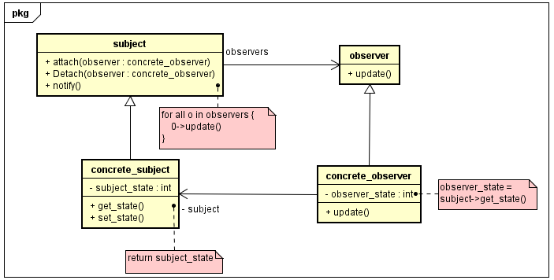

Observer
Descrição:
Observer, ou observador, é um padrão de projeto que implementa o tipo de relacionamento um-para-muitos entre objetos, assim permitindo que quando um objeto sofrer alguma mudança todos os objetos que se relacionam com ele são notificados e podem ser atualizados, caso necessário.
Diagrama de Classes genérico do padrão:
Exemplo:
A ideia do exemplo apresentada no livro consiste num aplicativo de monitoramento do clima, o sistema
deverá receber os dados do weather_data sobre a temperatura, a humidade e pressão baromêtrica
e mostrar na tela esses dados, sendo atualizado sempre que houver mudanças e em todas as telas que
usem os dados fornecidos.
No exemplo devem-se destacar as seguintes classes:
- subject, observer e display_element.
- weather_data.
- current_conditions, statistics_display, forecast_display e third_party_display.
As classes subject, observer e display_element são as classes abstratas que moldam
como devem se comportar tanto o sujeito quanto os observadores,respectivamente, já o display_element
molda como cada classe que o implementará irá mostrar os dados na tela.
A weather_data é quem implementa a classe abstrata subject
e é de onde os dados que seus observadores usam para exercer
suas funções, nesta relação ele é tratado como o sujeito a ser observado.
Por fim, as demais classes implementam as classe abstratas observer
e display_element, e nesta relação são tratados como os observadores de
weather_data.